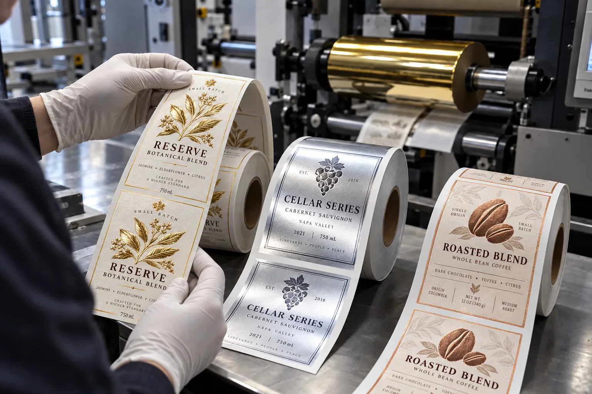

Short answer
Choose hot foil for a crisp, tactile premium accent; cold foil for broader flat metallic graphics and production efficiency; metallic ink for a quieter metal effect that behaves more like print. Then test the exact stock and finish, because none of those descriptions is a color guarantee.
Most metallic-label confusion starts with one line in a brief: "gold logo." The buyer imagines jewelry. The designer imagines a bright screen color. The printer prices the process available on its line. All three can be acting reasonably and still approve different products.
Three processes that should not share one vague name
| Process | Visual character | Production consideration |
|---|---|---|
| Hot foil | Crisp reflective accent, sometimes tactile | Heat, pressure, tooling and make-ready |
| Cold foil | Flat reflective layer suited to broader graphics | Adhesive image, registration and compatible finishing |
| Metallic ink | Softer shimmer from metallic pigment | Ink system, coverage and substrate influence |
A typical quote comparison that is not really a comparison
Consider a composite wine-label inquiry. One supplier quotes hot foil, one quotes metallic ink and a third writes only "gold effect." The unit prices are placed in a spreadsheet as if the finish were identical. The lowest quote wins until the sample arrives and the logo looks intentionally muted rather than mirror bright.
The metallic-ink supplier did not necessarily do poor work. Metallic ink may be exactly right for a restrained craft aesthetic. The mistake happened earlier: the buyer compared prices before defining the visual target. A fair quote comparison begins after the process, stock and approved effect match.
Where each option wins honestly
- Hot foil wins when a small logo, crest or border needs sharp premium emphasis on a compatible stock.
- Cold foil wins when metallic coverage is larger, detailed or part of a high-throughput label program.
- Metallic ink wins when the brand wants subtlety, print integration and does not need a mirror finish.
- Metallized film wins when metallic appearance covers much of the label and artwork can use white ink to control where metal shows.
I like foil. It photographs well and helps a production sample sell itself across a meeting table. That bias is exactly why I slow the conversation down. A dry-food jar with a quiet natural identity can look more expensive with one metallic-ink line than with a large gold patch that shouts over the product.
Artwork rules that affect the result
| Artwork feature | Risk | Better question |
|---|---|---|
| Very fine reversed text | Fill-in or weak transfer | What minimum line and gap does this process support? |
| Large solid foil area | Uneven coverage on textured stock | Can I approve a finished sample on production material? |
| Foil aligned to print | Registration tolerance becomes visible | What trap or separation should the artwork include? |
| Small gradient | Process may not reproduce the intended transition | Should this be built with overprint color on silver? |
Factory-side view
Approve movement, not a still screenshot
A metallic finish changes as the bottle turns. Photographing it from one flattering angle can hide weak coverage or make subtle ink look like foil.
Tilt the sample under normal shelf light. If the desired effect disappears when the hand moves, decide whether that is elegance or a problem before the bulk run.
What to put in a metallic label brief
- Reference photo or physical sample of the desired reflectivity.
- Exact areas that are metallic and whether they need texture.
- Label material, finish and exposure to moisture or abrasion.
- Quantity per artwork and whether tooling is acceptable.
- Minimum text and line detail in the metallic layer.
- Requirement for a production-stock sample before approval.
For the base finish decision, compare Matte vs Gloss Labels. For color setup and proof limits, see Pantone vs CMYK Label Printing.
Frequently asked questions
Is metallic ink the same as foil?
No. Metallic ink contains reflective pigment within an ink layer, while foil transfers a metallic layer from a carrier. Metallic ink usually appears subtler and less mirror-like.
What is the difference between hot foil and cold foil?
Hot foil uses heat, pressure and typically a die. Cold foil uses a printed adhesive and foil transfer process without a heated stamping die. Appearance, texture, setup and suitable artwork differ.
Which metallic finish is best for small label runs?
There is no universal winner. Metallic ink may simplify some workflows, while digital foil or hot foil may suit a small premium accent. Ask for the exact process and a finished sample rather than choosing by finish name alone.
Can foil be used on textured paper?
Hot foil is often considered for premium textured papers, but fine detail, pressure, die design and stock texture must be tested. Deep texture can interrupt coverage.
Related label guides
- Labels for HDPE and PP Containers: Adhesive Guide
- Direct Thermal vs Thermal Transfer Labels
- Wash-Off Labels for PET Recycling: Buyer Guide
Review the complete label construction
Send the package photos, material, finished label size, quantity by artwork, storage conditions and application method. We can review fit, material and production details before preparing a quote and digital proof.